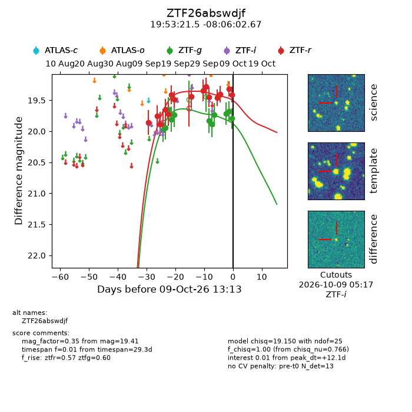
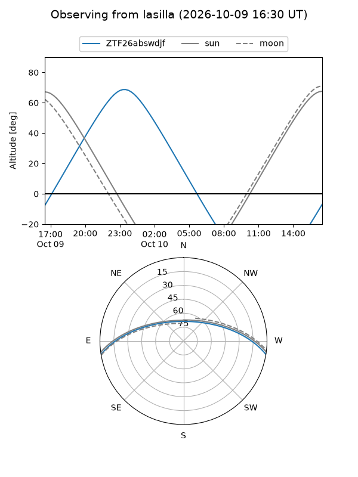
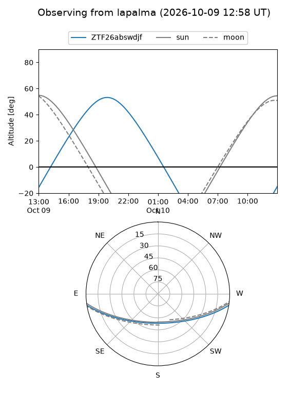
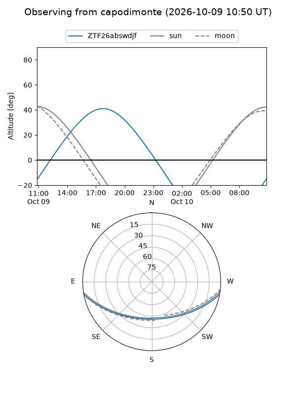
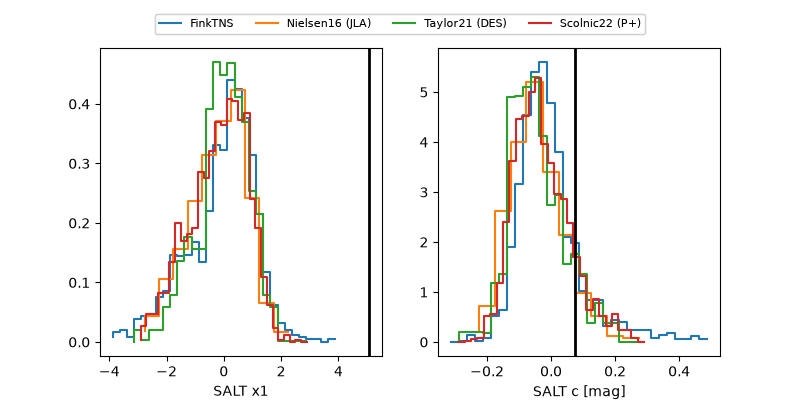

ZTF26abswdjf
Target ZTF26abswdjf at 2026-10-09 13:15
Aliases and brokers:
FINK-ZTF: ztf.fink-portal.org/ZTF26abswdjf
Lasair-ZTF: lasair-ztf.lsst.ac.uk/objects/ZTF26abswdjf
ALeRCE-ZTF: alerce.online/object/ZTF26abswdjf
Direct TNS query: direct search
alt names
ZTF26abswdjf (ztf,fink_ztf)
Coordinates:
equatorial (ra, dec) = 298.3394,-8.10074
equatorial (HMS+DMS) = 19:53:21.47,-08:06:02.67
galactic (l, b) = (32.6363,-17.42298)
Flags:
peak dt: +12.1
Photometry:
last ztfg=19.79, ztfr=19.41
11 ztfg, 15 ztfr detections
Lightcurve

Visibility



Additional plots
